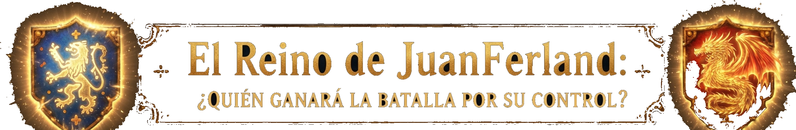
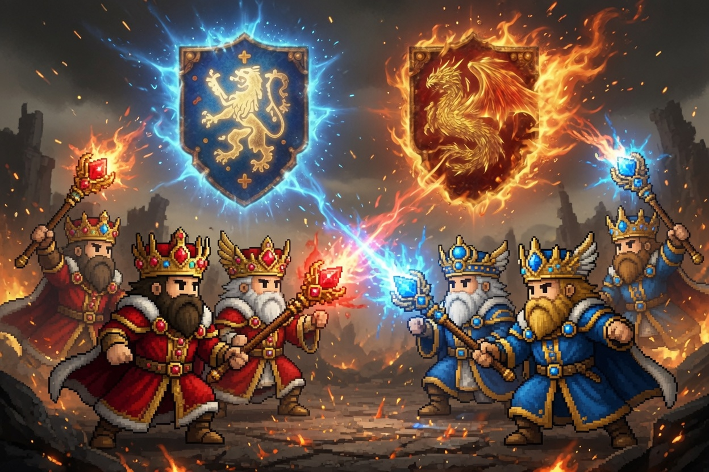
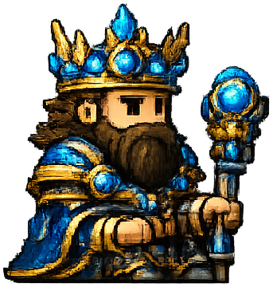
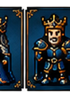
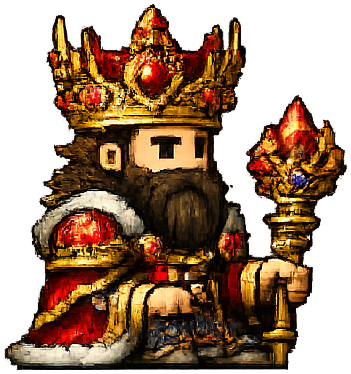
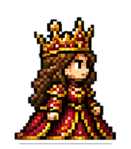
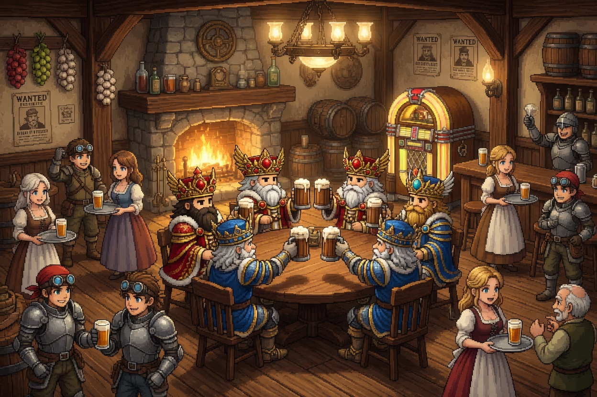

Jaque Mate
Ajedrez fantástico de 16-bits — el primer tablero de El Multiverso del Ajedrez
Arrastra una pieza al destino. Las casillas legales se iluminan al levantarla.
El botón ⛶ maximiza el tablero para concentración total. Deshacer y Rehacer reescriben jugadas hasta el mate.
Cada partida guarda un código de seis caracteres tipo NES. Cada jugada se respalda en localStorage e IndexedDB del dispositivo. Anótalo, sal, vuelve después y entra el código en la pantalla inicial. Cargas la posición exacta con su tablero, nivel, capturas y todo.
★ ÚNICO EN EL MUNDO
Empieza la partida contra la IA. Termínala con un amigo o amiga que llegue a continuarla. O al revés. El código captura todo el estado, así cualquiera con el código puede entrar, tomar el lugar de quien jugaba y seguir desde la posición exacta. La línea original sigue viva en paralelo. Endless multiverse fun.
Coleccionas posiciones célebres, retas desde cualquier nodo, y reconstruyes la genealogía completa de una partida que pasó por tres IAs y dos humanos. Cada gamestate tiene su propio ID: la partida ya no pertenece a dos jugadores, pertenece a la posición misma, y cualquiera puede tomarla. Ningún otro sitio de ajedrez ofrece esto.
Tu seudónimo es editable, persistente y solo tuyo. Vive en este navegador. Quien gana se queda en la Taberna y elige al siguiente: estilo king of the hill. Cada sala tiene un link compartible.
Los Dos Reinos es el primer tablero, no el único. Vienen en camino: sci-fi, la selva y españoles vs. indios — cada uno con su propio fondo, atmósfera, piezas y reyes. Un splash de selección de tablero está en camino para elegir entre todos ellos.
Gracias por jugar.
Posiciones célebres para tomar desde el filo, y tus propias partidas guardadas.
Entra en el instante exacto de la genialidad. Eliges bando y dificultad de la IA. Toma el lado del golpe y ejecútalo tú, o el otro y observa qué hace la IA.
Doble respaldo: localStorage e IndexedDB en este dispositivo. Cada gamestate guarda su propio ID.
—
—
¿Qué bando tomas a cargo?
Dificultad de la IA rival. Juega el otro bando: tú la observas en acción.






Empieza vs la IA, termina con un amigo (o al revés). Más en el (?).
ElMultiVersoDelAjedrez.com

Cómo funciona la Taberna
1. Toca un nombre de la lista para retarlo. Quien gana se queda.
2. ¿Aún sin rivales? Comparte tu link: quien lo abra entra aquí.
3. ¿Tienes un código de partida? Síguelo con la IA, o ábrelo para que un rival lo termine contigo.
mutear ambiente de la taberna
Buscando rivales...
¿Estás seguro?